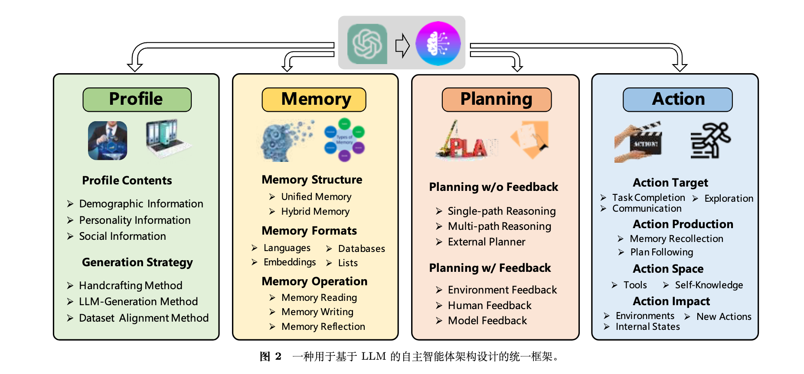
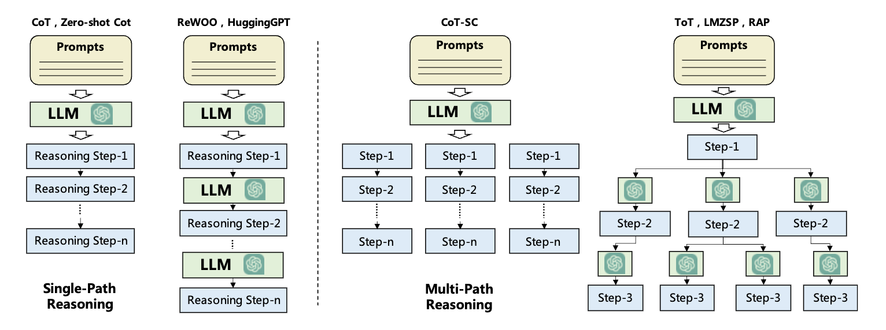

一个自主的智能体是一个位于环境中并与部分交互的系统，它感知环境并对其采取行动，随着时间的推移追求自身的议程，并以此影响它未来的感知。

智能体的架构，核心分为四个模块，分别是描述模块，记忆模块，规划模块和动作模块。描述模块是描述智能体的角色；记忆和规划模块将智能体置于动态环境中，使其能够回忆过去的行为并计划未来的行动；动作模块负责将智能体的决策转化为最终的输出。
描述模块
让智能体承担特定的角色来执行任务，例如编码员，教师等，通过一些信息或者数据完善对智能体的描述
记忆模块
记忆模块存储从环境中感知到的信息，并利用已记录的记忆来促进未来的动作。可以帮助智能体积累经验，自我进化。
- 记忆结构：记忆分为短时记忆和长时记忆
- 短时记忆包含有关智能体当前情境上下文信息，一般是存放到模型提示中
- 长时记忆存储智能体过去的言行，一般是通过向量化存储，然后利用向量数据库进行检索。
- 记忆格式：记忆格式可能分为自然语言记忆语义或者嵌入式记忆
- 自然语言记忆可以直接用原始的自然语言描述，这种格式可以用灵活易理解的方式表达，保留了丰富的语言信息
- 向量化，通过将记忆内存编码为嵌入向量，提高了检索和阅读效率
- 数据库格式：以数据库格式存储内存信息的数据库，使得智能体可以全面操控记忆，对记忆进行增删改查的操作
- 结构化列表，通过这个格式，内存的语义可以被高效且简洁的方式表达
- 记忆操作：智能体与环境之间的交互式通过三个重要的记忆操作来实现的，记忆的读取，记忆的写入，记忆反思
- 记忆读取：智能体读取记忆核心是如何从历史动作中提取有价值的信息，一般有三个准则，最近性，相关性和重要性，根据这三个指标检索到最适合的记忆
- 记忆写入：记忆的写入一方面要考虑如何存储相似的记忆，另一方面考虑当存储限制满了的时候，如何删除记忆
- 记忆反思：反思模拟了人类见证和评估自身认知，情感和行为过程的能力，通过总结历史记忆，为智能体提供独立总结和推断更加抽象、复杂和高层次的能力。比如从历史的交流中可以发现对象的人格，身份等信息。从低层次的信息中总结出高层次的见解
规划模块
面对复杂任务的时候，希望智能体可以将问题进行分解，分解为更加简单的子任务并分别解决
- 无反馈规划
- 
- 智能体在采取行动之后，不会受到其未来行为的反馈
- 单路径策略：任务被划分为多个子任务之后，智能体串行执行各个子任务
- 多路径策略：通过COT生成各种推理路径和相应的答案，随后选择出现频率最高的答案作为最终输出。TOT被设计为使用树状推理结构生成计划，树的每个节点表示一个想法，对应一个中间推理步骤。最终的计划使用BFS或者DFS策略生成
- 外部规划器：将任务描述转换为正式的规划域定义语言，然后使用外部规划器处理，最后将结果转换为自然语言
- 带反馈规划
- 生成一个完美的计划是不太现实的，它需要考虑各种复杂的前提条件，而且计划的执行能收到不可预测的转移动态的阻碍，使计划无法执行。反馈可以从环境，人类和模型中获得
- 环境反馈：这种反馈来自客观世界或者虚拟世界，可以是采取行动之后的观察结果，比如React，是通过思考-行为-观察三元组构建提示。思考旨在促进高层次推理和规划，以指导智能体行为。动作台标智能体采取的行动，观察通过外部结果获取行动的结果，下一步的思考受到先前观察的影响
- 人类反馈：人类反馈是一种主观信号，可以让智能体与人类的价值观和偏好对其，还可以帮助解决幻觉问题
- 模型反馈：这种反馈通常是基于预训练生成的，是一种自我精化机制，该机制包含三个关键组件：输出，反馈和优化
- 生成一个完美的计划是不太现实的，它需要考虑各种复杂的前提条件，而且计划的执行能收到不可预测的转移动态的阻碍，使计划无法执行。反馈可以从环境，人类和模型中获得
动作模块
动作是将智能体的决策转换为具体结果，处于最下游的位置，直接与环境交互。受配置文件，记忆和规划模块的影响。
- 动作目标：智能体可以执行各种目标的动作，比如任务完成，通信，环境探索
- 动作生成：智能体可以通过不同的策略和和来源采取行动，一种是通过记忆回溯的动作，另一种是通过计划遵循的动作
- 动作空间：值得是智能体可以执行的动作集合，一般可以分为外部工具和LLM的内部知识
- 外部工具：智能体面对未知领域知识的时候，会通过外部工具来获取专业的知识，比如APIs，或者数据库&知识库，外部特定领域的模型等
- 内部知识：大模型自身的规划能力，对话能力以及常识的理解能力
- 动作影响：智能体行为的结果。分为改变环境，改变内部状态，触发新动作
智能体能力获取
- 微调：微调是指根据特定的数据集调整模型的参数，增强模型在特定领域的能力。数据集的获取一方面可以通过人工标注，另一方面也可以通过大模型生成
- 非微调：通过提示词工程，强化模型在特定领域上的能力；通过机制工程，比如利用试错法，众包，经验积累，自驱演化等